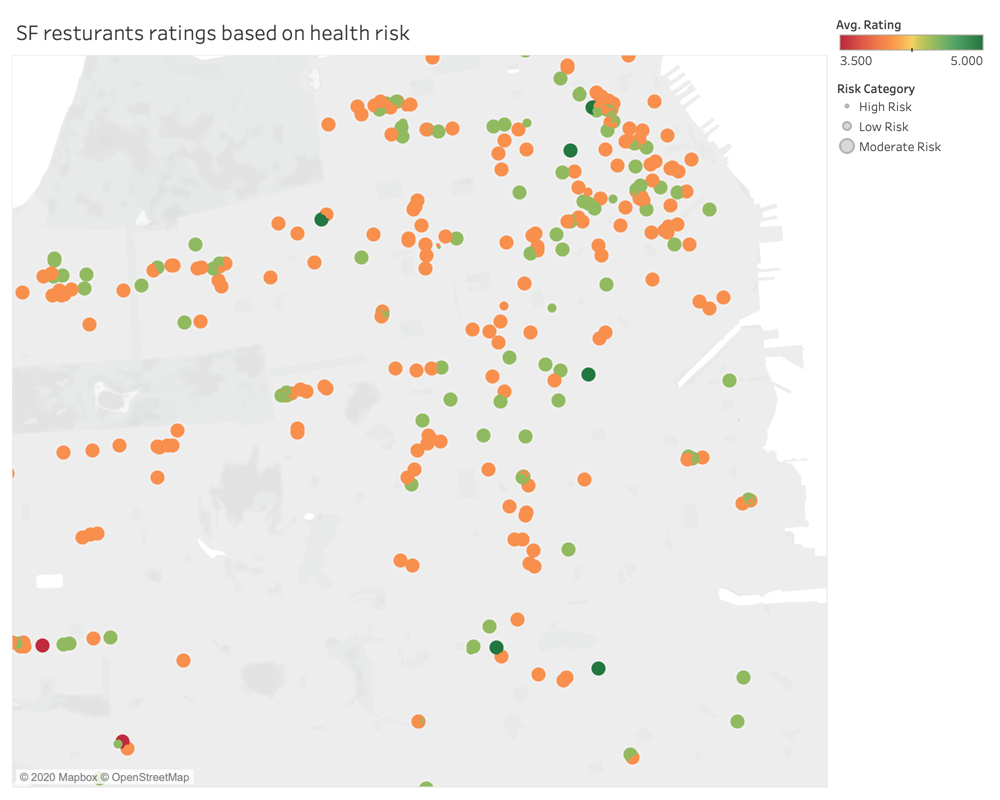
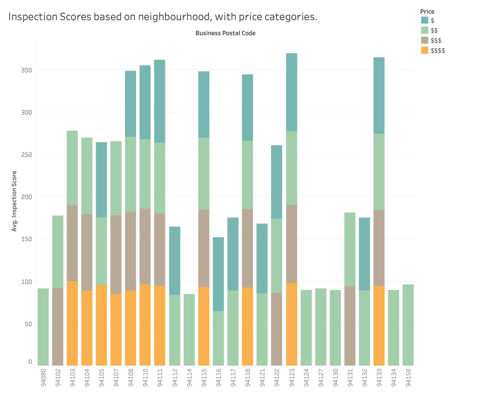

Beta Release Graphs
This is the interactive version of the beta prototype
These are the Prototype

This map is showing the review in color and then making the size of the circle the health score.

This bar chart is showing the price category in the bottom and then showing the average health score.
Wrangling
I originally downloaded the whole dataset since I wanted to work with more categories.
The data wrangling was very hard. I had to use the Yelp API to grab the data of different restaurants and food places in San Francisco, to do my comparison of the health score with the reviews. I ended up using a python script to merge the JSON files and then add that data as a union into Tableau"
I ended up using a python script to get the JSON of the yelp data Yelp API Script I then modified the script and got the top 50 restaurants based on yelp reviews from each zip code in San Francisco. After that I ended up doing an inner join in tableau based on the address, making it lowercase.
I plan on
Question
The question for this data was that I wanted to find out the relationship between neighborhood, prices, health score, and ratings to see if they are any factors that can affect the quality of food found in the restaurants.
Answer
Till now, the data ends up showing some interesting trends. Personally, some of the places that I had visited that I thought were good, were either not on the map or were having a lower health score. I can see a trend in the stacked bar where certain places only had cheaper restaurants and they had a lower health score. A lot of the restaurants with lower reviews tend to have a lower health score but at the same time, a lot of the restaurants that have very good review scores, have lower health scores as well, which was interesting to note.
Encoding
My color and size encoding, for now, is very simple, in which I am using the reviews and size.
Interactivity
For the interactivity in this visualization, I will end up trying to add a drop-down filter based on the type of health complaint that was provided. I will also create zooming into the specific restaurant and also try to pull up certain keywords from the yelp reviews in the tooltip.
I also want to be able to create some sort of slider filter, to focus on specific dots in the city based on cuisine or another food category. The biggest challenge is to merge the health data with the restaurant data which is still in progress. I also plan on putting a dropdown based on the area and neighborhood.
I also plan on doing a wordle of the reviews